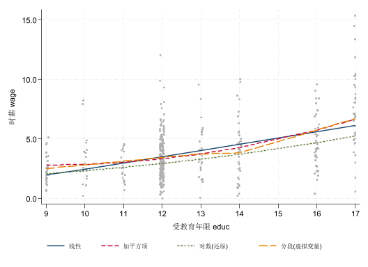
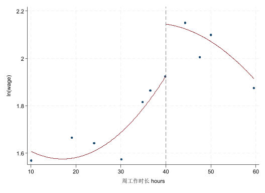

* 线性回归：估计、FWL、虚拟变量与交乘项。
* 从 FinEco 仓库根目录运行；数据为本地冻结快照。
* 图形导出到 figs/raw，机器核对值保存至 logs/linear-regression。
* 二维聚类的缺失标准误与警告保留为少簇推断边界演示。
capture mkdir "logs"
capture mkdir "logs/linear-regression"
capture mkdir "figs"
capture mkdir "figs/raw"
clear all
set more off
* 数据全部读取本地冻结快照；从 FinEco 仓库根目录执行。
global D "data/linear-regression"
* 所需 SSC 命令；用户已授权安装，已有命令不重复安装。
foreach cmd in estout binscatter ftools reghdfe {
capture which `cmd'
if _rc {
ssc install `cmd', replace
}
}
*===========================================================================9 线性回归：Stata 实验
返回理论篇 · 数据说明 · 完整 do-file
本实验保留工资、汽车和企业财务案例，核对去均值、FWL、虚拟变量的两种参数化，以及中心化前后的拟合等价性。数据均读取本地快照；网页只展示从头运行后保存的实际结果，不执行代码或实时取数。企业数据来源的部分口径未完整说明，结果只作教学演示。
从仓库根目录运行 python tools/linear-regression/run_notebook.py。需要已配置的 STATA_EXE 和 nbstata 环境。
9.1 运行准备
校验冻结数据并检查 SSC 命令；已安装的命令不会重复安装。
9.2 案例情境：一个系数，三种读法
按顺序运行，比较同一段中不同设定的输出。
*===========================================================================
use "$D/mroz.dta", clear
* 只保留在职女性(wage>0)、剔除个别极端高薪，并把人数过少的教育年限并组
drop if wage==0
drop if wage>17
replace educ = 9 if educ<=9
replace educ = 14 if educ==15
reg wage educ
assert e(N) == 421
file open check using "logs/linear-regression/results.txt", write replace
file write check "mroz_N=" (e(N)) _n "mroz_b=" (_b[educ]) _n
* wage = -2.74 + 0.52*educ：0.52 该读成"因果/比较/预测"中的哪一种？
*===========================================================================(325 observations deleted)
(7 observations deleted)
(18 real changes made)
(6 real changes made)
Source | SS df MS Number of obs = 421
-------------+---------------------------------- F(1, 419) = 115.85
Model | 516.105831 1 516.105831 Prob > F = 0.0000
Residual | 1866.698 419 4.4551265 R-squared = 0.2166
-------------+---------------------------------- Adj R-squared = 0.2147
Total | 2382.80383 420 5.67334246 Root MSE = 2.1107
------------------------------------------------------------------------------
wage | Coefficient Std. err. t P>|t| [95% conf. interval]
-------------+----------------------------------------------------------------
educ | 0.522 0.048 10.76 0.000 0.426 0.617
_cons | -2.744 0.624 -4.40 0.000 -3.971 -1.517
------------------------------------------------------------------------------9.3 概念讲解：回归到底在估计什么
按顺序运行，比较同一段中不同设定的输出。
*===========================================================================
**## 条件期望函数 (CEF)：按 X 分组求平均
bysort educ: egen wage_m = mean(wage) // E(wage | educ)
egen tag = tag(educ)
format wage* %3.1f
list educ wage_m if tag==1, clean noobs
* 某一组的 CEF = 条件均值（下面两条等价）
sum wage if educ==12
reg wage if educ==12, noheader
* CEF 散点图（灰点=个体，菱形=各组均值，红线=OLS 拟合）
twoway (scatter wage educ, mcolor(gs10) msize(vsmall) jitter(2)) ///
(scatter wage_m educ if tag==1, mcolor(navy) msize(medlarge) ///
msymbol(D)) ///
(lfit wage educ, lcolor(cranberry) lwidth(medthick)), ///
legend(order(2 "各教育年限的平均工资 E[wage|educ]" 3 "OLS 拟合直线") ///
rows(2) size(small) pos(11) ring(0)) ///
xtitle("受教育年限 educ") ytitle("时薪 wage") xlabel(9(1)17)
graph export "figs/raw/linear-reg-fig01-cef-edu-20261014-163740.png" , ///
replace width(1200)
**## 回归估计的就是 CEF（个体 = 分组均值加权回归）
bysort educ: egen Nj = count(educ)
eststo clear
eststo m1: reg wage educ // 个体回归
eststo m2: reg wage_m educ if tag==1 // 只用 8 个组均值
eststo m3: reg wage_m educ if tag==1 [aweight=Nj] // 组均值，按组容量加权
esttab m1 m2 m3, nogap mtitle(individual groupmean groupmean_aw) ///
b(%5.3f) se(%5.3f) scalar(N r2)
* 第 (1)(3) 列点估计相同；组均值是总体 CEF 的样本估计
**## 线性投影 & 换一个 f(.) 就是换一个模型
gen educ2 = educ^2
eststo clear
eststo s1: reg wage educ // (1) 线性
eststo s2: reg wage educ educ2 // (2) 平方项：允许弯曲
eststo s3: reg lwage educ // (3) 对数：改变尺度
esttab s1 s2 s3, nogap mtitle(linear quad log) b(%5.3f) se(%5.3f) ///
scalar(N r2)
* 四种设定的拟合线画在同一张散点图上
reg wage educ
predict yhat_lin
reg wage educ c.educ#c.educ
predict yhat_quad
reg lwage educ
predict lyhat
gen yhat_log = exp(lyhat) // 指数还原，不是条件均值
gen Dhi = (educ>13)
reg wage c.educ##i.Dhi
predict yhat_dum
sort educ
twoway (scatter wage educ, mcolor(gs11) msize(vsmall) jitter(2)) ///
(line yhat_lin educ, lcolor(navy) lwidth(medthick)) ///
(line yhat_quad educ, lcolor(cranberry) lwidth(medthick) ///
lpattern(dash)) ///
(line yhat_log educ, lcolor(forest_green) lwidth(medthick) ///
lpattern(shortdash)) ///
(line yhat_dum educ, lcolor(dkorange) lwidth(medthick) ///
lpattern(longdash)), ///
legend(order(2 "线性" 3 "加平方项" 4 "对数(还原)" 5 "分段(虚拟变量)") ///
rows(1) size(small) pos(6)) ///
xtitle("受教育年限 educ") ytitle("时薪 wage") xlabel(9(1)17)
graph export ///
"figs/raw/linear-reg-fig02-four-models-20261014-163740.png" , ///
replace width(1300)
**## 2.5–2.7 系数含义、比较 vs 影响、多元回归偏效应
* 更明显的偏效应例子：nlsw88 中 tenure(任职年限) 在控制 ttl_exp(总工龄) 后骤降
sysuse nlsw88, clear
eststo clear
eststo n1: reg wage tenure
eststo n2: reg wage tenure ttl_exp
eststo n3: reg wage tenure ttl_exp grade
esttab n1 n2 n3, se star(* 0.10 ** 0.05 *** 0.01) r2 ///
mtitle("只放 tenure" "+总工龄" "+受教育")
* tenure 0.186*** → 0.041(不显著)：控制总工龄后，"纯任职"效应很小
corr tenure ttl_exp
**## 常数项与 FWL：同一样本核对
reg wage tenure ttl_exp grade
gen byte sample_fwl = e(sample)
scalar b_full = _b[tenure]
file write check "tenure_full=" (b_full) _n
reg wage ttl_exp grade if sample_fwl
predict double wage_r if sample_fwl, residuals
reg tenure ttl_exp grade if sample_fwl
predict double tenure_r if sample_fwl, residuals
reg wage_r tenure_r if sample_fwl, noconstant
scalar fwl_gap = _b[tenure_r]-b_full
assert abs(fwl_gap) < 1e-10
file write check "fwl_gap=" (fwl_gap) _n
* 只处理 y 的反例。
reg wage_r tenure if sample_fwl
file write check "y_only_b=" (_b[tenure]) _n
* 单变量回归去均值的核对。
reg wage tenure if sample_fwl
scalar b_simple = _b[tenure]
quietly summarize wage if sample_fwl
gen double wage_dm = wage-r(mean) if sample_fwl
quietly summarize tenure if sample_fwl
gen double tenure_dm = tenure-r(mean) if sample_fwl
reg wage_dm tenure_dm if sample_fwl, noconstant
assert abs(_b[tenure_dm]-b_simple) < 1e-10
file write check "demean_gap=" (_b[tenure_dm]-b_simple) _n
*===========================================================================
educ wage_m
9 2.5
10 3.2
11 2.6
12 3.4
13 3.9
14 4.1
16 4.7
17 7.4
Variable | Obs Mean Std. dev. Min Max
-------------+---------------------------------------------------------
wage | 208 3.433929 1.759613 .1616 11.933
------------------------------------------------------------------------------
wage | Coefficient Std. err. t P>|t| [95% conf. interval]
-------------+----------------------------------------------------------------
_cons | 3.434 0.122 28.15 0.000 3.193 3.674
------------------------------------------------------------------------------
file figs/raw/linear-reg-fig01-cef-edu-20261014-163740.png written in PNG forma
> t
Source | SS df MS Number of obs = 421
-------------+---------------------------------- F(1, 419) = 115.85
Model | 516.105831 1 516.105831 Prob > F = 0.0000
Residual | 1866.698 419 4.4551265 R-squared = 0.2166
-------------+---------------------------------- Adj R-squared = 0.2147
Total | 2382.80383 420 5.67334246 Root MSE = 2.1107
------------------------------------------------------------------------------
wage | Coefficient Std. err. t P>|t| [95% conf. interval]
-------------+----------------------------------------------------------------
educ | 0.522 0.048 10.76 0.000 0.426 0.617
_cons | -2.744 0.624 -4.40 0.000 -3.971 -1.517
------------------------------------------------------------------------------
Source | SS df MS Number of obs = 8
-------------+---------------------------------- F(1, 6) = 23.55
Model | 13.7292056 1 13.7292056 Prob > F = 0.0028
Residual | 3.4975139 6 .582918983 R-squared = 0.7970
-------------+---------------------------------- Adj R-squared = 0.7631
Total | 17.2267195 7 2.46095993 Root MSE = .76349
------------------------------------------------------------------------------
wage_m | Coefficient Std. err. t P>|t| [95% conf. interval]
-------------+----------------------------------------------------------------
educ | 0.497 0.102 4.85 0.003 0.247 0.748
_cons | -2.361 1.334 -1.77 0.127 -5.626 0.904
------------------------------------------------------------------------------
(sum of wgt is 421)
Source | SS df MS Number of obs = 8
-------------+---------------------------------- F(1, 6) = 25.47
Model | 9.8072367 1 9.8072367 Prob > F = 0.0023
Residual | 2.31064314 6 .38510719 R-squared = 0.8093
-------------+---------------------------------- Adj R-squared = 0.7775
Total | 12.1178798 7 1.73112569 Root MSE = .62057
------------------------------------------------------------------------------
wage_m | Coefficient Std. err. t P>|t| [95% conf. interval]
-------------+----------------------------------------------------------------
educ | 0.522 0.103 5.05 0.002 0.269 0.774
_cons | -2.744 1.331 -2.06 0.085 -6.001 0.514
------------------------------------------------------------------------------
------------------------------------------------------------
(1) (2) (3)
individual groupmean groupmean_aw
------------------------------------------------------------
educ 0.522*** 0.497** 0.522**
(0.048) (0.102) (0.103)
_cons -2.744*** -2.361 -2.744
(0.624) (1.334) (1.331)
------------------------------------------------------------
N 421 8 8
r2 0.217 0.797 0.809
------------------------------------------------------------
Standard errors in parentheses
* p<0.05, ** p<0.01, *** p<0.001
Source | SS df MS Number of obs = 421
-------------+---------------------------------- F(1, 419) = 115.85
Model | 516.105831 1 516.105831 Prob > F = 0.0000
Residual | 1866.698 419 4.4551265 R-squared = 0.2166
-------------+---------------------------------- Adj R-squared = 0.2147
Total | 2382.80383 420 5.67334246 Root MSE = 2.1107
------------------------------------------------------------------------------
wage | Coefficient Std. err. t P>|t| [95% conf. interval]
-------------+----------------------------------------------------------------
educ | 0.522 0.048 10.76 0.000 0.426 0.617
_cons | -2.744 0.624 -4.40 0.000 -3.971 -1.517
------------------------------------------------------------------------------
Source | SS df MS Number of obs = 421
-------------+---------------------------------- F(2, 418) = 64.91
Model | 564.686216 2 282.343108 Prob > F = 0.0000
Residual | 1818.11762 418 4.34956368 R-squared = 0.2370
-------------+---------------------------------- Adj R-squared = 0.2333
Total | 2382.80383 420 5.67334246 Root MSE = 2.0856
------------------------------------------------------------------------------
wage | Coefficient Std. err. t P>|t| [95% conf. interval]
-------------+----------------------------------------------------------------
educ | -1.123 0.494 -2.27 0.024 -2.094 -0.151
educ2 | 0.062 0.018 3.34 0.001 0.025 0.098
_cons | 7.915 3.248 2.44 0.015 1.529 14.300
------------------------------------------------------------------------------
Source | SS df MS Number of obs = 421
-------------+---------------------------------- F(1, 419) = 62.68
Model | 25.738915 1 25.738915 Prob > F = 0.0000
Residual | 172.051265 419 .410623544 R-squared = 0.1301
-------------+---------------------------------- Adj R-squared = 0.1281
Total | 197.79018 420 .470929 Root MSE = .6408
------------------------------------------------------------------------------
lwage | Coefficient Std. err. t P>|t| [95% conf. interval]
-------------+----------------------------------------------------------------
educ | 0.116 0.015 7.92 0.000 0.088 0.145
_cons | -0.321 0.189 -1.69 0.091 -0.694 0.051
------------------------------------------------------------------------------
------------------------------------------------------------
(1) (2) (3)
linear quad log
------------------------------------------------------------
educ 0.522*** -1.123* 0.116***
(0.048) (0.494) (0.015)
educ2 0.062***
(0.018)
_cons -2.744*** 7.915* -0.321
(0.624) (3.248) (0.189)
------------------------------------------------------------
N 421 421 421
r2 0.217 0.237 0.130
------------------------------------------------------------
Standard errors in parentheses
* p<0.05, ** p<0.01, *** p<0.001
Source | SS df MS Number of obs = 421
-------------+---------------------------------- F(1, 419) = 115.85
Model | 516.105831 1 516.105831 Prob > F = 0.0000
Residual | 1866.698 419 4.4551265 R-squared = 0.2166
-------------+---------------------------------- Adj R-squared = 0.2147
Total | 2382.80383 420 5.67334246 Root MSE = 2.1107
------------------------------------------------------------------------------
wage | Coefficient Std. err. t P>|t| [95% conf. interval]
-------------+----------------------------------------------------------------
educ | 0.522 0.048 10.76 0.000 0.426 0.617
_cons | -2.744 0.624 -4.40 0.000 -3.971 -1.517
------------------------------------------------------------------------------
(option xb assumed; fitted values)
Source | SS df MS Number of obs = 421
-------------+---------------------------------- F(2, 418) = 64.91
Model | 564.686216 2 282.343108 Prob > F = 0.0000
Residual | 1818.11762 418 4.34956368 R-squared = 0.2370
-------------+---------------------------------- Adj R-squared = 0.2333
Total | 2382.80383 420 5.67334246 Root MSE = 2.0856
------------------------------------------------------------------------------
wage | Coefficient Std. err. t P>|t| [95% conf. interval]
-------------+----------------------------------------------------------------
educ | -1.123 0.494 -2.27 0.024 -2.094 -0.151
|
c.educ#|
c.educ | 0.062 0.018 3.34 0.001 0.025 0.098
|
_cons | 7.915 3.248 2.44 0.015 1.529 14.300
------------------------------------------------------------------------------
(option xb assumed; fitted values)
Source | SS df MS Number of obs = 421
-------------+---------------------------------- F(1, 419) = 62.68
Model | 25.738915 1 25.738915 Prob > F = 0.0000
Residual | 172.051265 419 .410623544 R-squared = 0.1301
-------------+---------------------------------- Adj R-squared = 0.1281
Total | 197.79018 420 .470929 Root MSE = .6408
------------------------------------------------------------------------------
lwage | Coefficient Std. err. t P>|t| [95% conf. interval]
-------------+----------------------------------------------------------------
educ | 0.116 0.015 7.92 0.000 0.088 0.145
_cons | -0.321 0.189 -1.69 0.091 -0.694 0.051
------------------------------------------------------------------------------
(option xb assumed; fitted values)
Source | SS df MS Number of obs = 421
-------------+---------------------------------- F(3, 417) = 43.36
Model | 566.520474 3 188.840158 Prob > F = 0.0000
Residual | 1816.28336 417 4.35559559 R-squared = 0.2378
-------------+---------------------------------- Adj R-squared = 0.2323
Total | 2382.80383 420 5.67334246 Root MSE = 2.087
------------------------------------------------------------------------------
wage | Coefficient Std. err. t P>|t| [95% conf. interval]
-------------+----------------------------------------------------------------
educ | 0.308 0.113 2.74 0.006 0.087 0.530
1.Dhi | -9.368 2.772 -3.38 0.001 -14.817 -3.920
|
Dhi#c.educ |
1 | 0.653 0.192 3.40 0.001 0.275 1.030
|
_cons | -0.267 1.311 -0.20 0.839 -2.845 2.311
------------------------------------------------------------------------------
(option xb assumed; fitted values)
file figs/raw/linear-reg-fig02-four-models-20261014-163740.png written in PNG f
> ormat
(NLSW, 1988 extract)
Source | SS df MS Number of obs = 2,231
-------------+---------------------------------- F(1, 2229) = 72.66
Model | 2339.38077 1 2339.38077 Prob > F = 0.0000
Residual | 71762.4469 2,229 32.1949066 R-squared = 0.0316
-------------+---------------------------------- Adj R-squared = 0.0311
Total | 74101.8276 2,230 33.2295191 Root MSE = 5.6741
------------------------------------------------------------------------------
wage | Coefficient Std. err. t P>|t| [95% conf. interval]
-------------+----------------------------------------------------------------
tenure | 0.186 0.022 8.52 0.000 0.143 0.229
_cons | 6.681 0.177 37.69 0.000 6.334 7.029
------------------------------------------------------------------------------
Source | SS df MS Number of obs = 2,231
-------------+---------------------------------- F(2, 2228) = 84.01
Model | 5196.37604 2 2598.18802 Prob > F = 0.0000
Residual | 68905.4516 2,228 30.9270429 R-squared = 0.0701
-------------+---------------------------------- Adj R-squared = 0.0693
Total | 74101.8276 2,230 33.2295191 Root MSE = 5.5612
------------------------------------------------------------------------------
wage | Coefficient Std. err. t P>|t| [95% conf. interval]
-------------+----------------------------------------------------------------
tenure | 0.041 0.026 1.56 0.118 -0.010 0.092
ttl_exp | 0.301 0.031 9.61 0.000 0.239 0.362
_cons | 3.772 0.349 10.81 0.000 3.087 4.456
------------------------------------------------------------------------------
Source | SS df MS Number of obs = 2,229
-------------+---------------------------------- F(3, 2225) = 128.82
Model | 10963.7014 3 3654.56714 Prob > F = 0.0000
Residual | 63124.2663 2,225 28.3704568 R-squared = 0.1480
-------------+---------------------------------- Adj R-squared = 0.1468
Total | 74087.9678 2,228 33.2531274 Root MSE = 5.3264
------------------------------------------------------------------------------
wage | Coefficient Std. err. t P>|t| [95% conf. interval]
-------------+----------------------------------------------------------------
tenure | 0.038 0.025 1.51 0.132 -0.011 0.087
ttl_exp | 0.233 0.030 7.68 0.000 0.173 0.292
grade | 0.649 0.046 14.24 0.000 0.560 0.739
_cons | -3.864 0.632 -6.12 0.000 -5.103 -2.625
------------------------------------------------------------------------------
------------------------------------------------------------
(1) (2) (3)
只放 tenure +总工龄 +受教育
------------------------------------------------------------
tenure 0.186*** 0.0409 0.0378
(0.0218) (0.0262) (0.0251)
ttl_exp 0.301*** 0.233***
(0.0313) (0.0303)
grade 0.649***
(0.0456)
_cons 6.681*** 3.772*** -3.864***
(0.177) (0.349) (0.632)
------------------------------------------------------------
N 2231 2231 2229
R-sq 0.032 0.070 0.148
------------------------------------------------------------
Standard errors in parentheses
* p<0.10, ** p<0.05, *** p<0.01
(obs=2,231)
| tenure ttl_exp
-------------+------------------
tenure | 1.0000
ttl_exp | 0.5766 1.0000
Source | SS df MS Number of obs = 2,229
-------------+---------------------------------- F(3, 2225) = 128.82
Model | 10963.7014 3 3654.56714 Prob > F = 0.0000
Residual | 63124.2663 2,225 28.3704568 R-squared = 0.1480
-------------+---------------------------------- Adj R-squared = 0.1468
Total | 74087.9678 2,228 33.2531274 Root MSE = 5.3264
------------------------------------------------------------------------------
wage | Coefficient Std. err. t P>|t| [95% conf. interval]
-------------+----------------------------------------------------------------
tenure | 0.038 0.025 1.51 0.132 -0.011 0.087
ttl_exp | 0.233 0.030 7.68 0.000 0.173 0.292
grade | 0.649 0.046 14.24 0.000 0.560 0.739
_cons | -3.864 0.632 -6.12 0.000 -5.103 -2.625
------------------------------------------------------------------------------
Source | SS df MS Number of obs = 2,229
-------------+---------------------------------- F(2, 2226) = 191.98
Model | 10899.2144 2 5449.60722 Prob > F = 0.0000
Residual | 63188.7533 2,226 28.3866816 R-squared = 0.1471
-------------+---------------------------------- Adj R-squared = 0.1463
Total | 74087.9678 2,228 33.2531274 Root MSE = 5.3279
------------------------------------------------------------------------------
wage | Coefficient Std. err. t P>|t| [95% conf. interval]
-------------+----------------------------------------------------------------
ttl_exp | 0.259 0.025 10.36 0.000 0.210 0.308
grade | 0.650 0.046 14.25 0.000 0.561 0.740
_cons | -3.974 0.628 -6.33 0.000 -5.205 -2.743
------------------------------------------------------------------------------
(17 missing values generated)
Source | SS df MS Number of obs = 2,229
-------------+---------------------------------- F(2, 2226) = 553.90
Model | 22454.4755 2 11227.2378 Prob > F = 0.0000
Residual | 45119.4889 2,226 20.2693122 R-squared = 0.3323
-------------+---------------------------------- Adj R-squared = 0.3317
Total | 67573.9644 2,228 30.3294275 Root MSE = 4.5021
------------------------------------------------------------------------------
tenure | Coefficient Std. err. t P>|t| [95% conf. interval]
-------------+----------------------------------------------------------------
ttl_exp | 0.687 0.021 32.52 0.000 0.645 0.728
grade | 0.020 0.039 0.52 0.606 -0.056 0.095
_cons | -2.911 0.531 -5.49 0.000 -3.951 -1.871
------------------------------------------------------------------------------
(17 missing values generated)
Source | SS df MS Number of obs = 2,229
-------------+---------------------------------- F(1, 2228) = 2.28
Model | 64.4869925 1 64.4869925 Prob > F = 0.1315
Residual | 63124.2663 2,228 28.332256 R-squared = 0.0010
-------------+---------------------------------- Adj R-squared = 0.0006
Total | 63188.7533 2,229 28.3484761 Root MSE = 5.3228
------------------------------------------------------------------------------
wage_r | Coefficient Std. err. t P>|t| [95% conf. interval]
-------------+----------------------------------------------------------------
tenure_r | 0.038 0.025 1.51 0.132 -0.011 0.087
------------------------------------------------------------------------------
Source | SS df MS Number of obs = 2,229
-------------+---------------------------------- F(1, 2227) = 1.52
Model | 43.0583016 1 43.0583016 Prob > F = 0.2180
Residual | 63145.695 2,227 28.3546004 R-squared = 0.0007
-------------+---------------------------------- Adj R-squared = 0.0002
Total | 63188.7533 2,228 28.3611999 Root MSE = 5.3249
------------------------------------------------------------------------------
wage_r | Coefficient Std. err. t P>|t| [95% conf. interval]
-------------+----------------------------------------------------------------
tenure | 0.025 0.020 1.23 0.218 -0.015 0.065
_cons | -0.151 0.166 -0.91 0.365 -0.477 0.176
------------------------------------------------------------------------------
Source | SS df MS Number of obs = 2,229
-------------+---------------------------------- F(1, 2227) = 73.12
Model | 2355.32774 1 2355.32774 Prob > F = 0.0000
Residual | 71732.64 2,227 32.2104356 R-squared = 0.0318
-------------+---------------------------------- Adj R-squared = 0.0314
Total | 74087.9678 2,228 33.2531274 Root MSE = 5.6754
------------------------------------------------------------------------------
wage | Coefficient Std. err. t P>|t| [95% conf. interval]
-------------+----------------------------------------------------------------
tenure | 0.187 0.022 8.55 0.000 0.144 0.230
_cons | 6.680 0.177 37.67 0.000 6.332 7.027
------------------------------------------------------------------------------
(17 missing values generated)
(17 missing values generated)
Source | SS df MS Number of obs = 2,229
-------------+---------------------------------- F(1, 2228) = 73.16
Model | 2355.32774 1 2355.32774 Prob > F = 0.0000
Residual | 71732.64 2,228 32.1959785 R-squared = 0.0318
-------------+---------------------------------- Adj R-squared = 0.0314
Total | 74087.9678 2,229 33.238209 Root MSE = 5.6742
------------------------------------------------------------------------------
wage_dm | Coefficient Std. err. t P>|t| [95% conf. interval]
-------------+----------------------------------------------------------------
tenure_dm | 0.187 0.022 8.55 0.000 0.144 0.230
------------------------------------------------------------------------------
9.4 代码实操
按顺序运行，比较同一段中不同设定的输出。
*===========================================================================
**## 跑第一个回归：从命令到拟合值
use "$D/mroz.dta", clear
drop if wage==0 | wage>17
replace educ = 9 if educ<=9
replace educ = 14 if educ==15
reg wage educ
predict wage_hat // 拟合值
predict e_hat, residual // 残差
list wage wage_hat e_hat in 1/3, clean
**## 读懂一张回归表（esttab）
eststo clear
eststo t1: reg wage educ
eststo t2: reg wage educ exper
esttab t1 t2, se star(* 0.10 ** 0.05 *** 0.01) r2 mtitle("模型1" "模型2")
**## 换个单位，系数会变吗：变量的尺度
gen wage_cents = wage*100
gen educ_months = educ*12
eststo clear
eststo a0: reg wage educ
eststo a1: reg wage_cents educ
eststo a2: reg wage educ_months
esttab a0 a1 a2, nogap mtitle(wage wage_cents educ_months) ///
b(%7.4f) se(%7.4f) scalar(r2)
**## 对数与标准化：系数怎么读
* 3.4a 对数-水平：半弹性（%）
reg lwage educ
* 3.4b 对数-对数：弹性（Cobb-Douglas）
use "$D/B1_production.dta", clear
reg lnY lnL lnK
* 3.4c 标准化系数：以标准差为单位比较
use "$D/mroz.dta", clear
drop if wage==0 | wage>17
reg lwage educ exper, beta
**## 因子变量：把类别放进回归
sysuse auto, clear
label define forlbl 0 "国产车" 1 "进口车"
label values foreign forlbl
reg price i.foreign weight
scalar dummy_slope = _b[weight]
file write check "dummy_b=" (_b[1.foreign]) _n
reg price ibn.foreign weight, noconstant
assert abs(_b[weight]-dummy_slope) < 1e-10
reg price i.foreign##c.weight
file write check "foreign_slope_diff=" (_b[1.foreign#c.weight]) _n
twoway (scatter price weight if foreign==0, mcolor(navy) msymbol(O) ///
msize(small)) ///
(scatter price weight if foreign==1, mcolor(cranberry) msymbol(T) ///
msize(small)) ///
(lfit price weight if foreign==0, lcolor(navy)) ///
(lfit price weight if foreign==1, lcolor(cranberry)), ///
legend(order(1 "国产车" 2 "进口车") rows(1) pos(6)) ///
xtitle("车重 weight") ytitle("价格 price")
graph export ///
"figs/raw/linear-reg-fig03-dummy-shift-20261014-163740.png" , ///
replace width(1200)
**## 交叉项：让边际效应随另一个变量变
use "$D/xtcs.dta", clear
xtset code year
global zz "tang fr ndts L.tobin i.year"
reg tl npr size $zz, robust noheader // 不含交叉项：npr 系数为负
reg tl npr size c.npr#c.size $zz, robust noheader
file write check "npr_b=" (_b[npr]) _n "interaction_b=" ///
(_b[c.npr#c.size]) _n
* 边际效应 dtl/dnpr = 1.729 - 0.100*size
qui reg tl npr size c.npr#c.size $zz, robust
keep if e(sample)
margins, dydx(npr) at(size=(19(1)24))
marginsplot, yline(0, lpattern(dash) lcolor(red)) recast(line) ///
recastci(rarea) ///
xtitle("公司规模 size") ytitle("npr 对 tl 的边际效应")
graph export ///
"figs/raw/linear-reg-fig04-margins-npr-20261014-163740.png" , ///
replace width(1200)
**## 中心化：相同样本、相同模型，只改变参考点
use "$D/xtcs.dta", clear
xtset code year
reg tl c.npr##c.size $zz, robust
gen byte sample_center = e(sample)
scalar interaction_before = _b[c.npr#c.size]
predict double fitted_before if sample_center
quietly summarize size if sample_center
scalar size_mean = r(mean)
gen double size_c = size-size_mean
reg tl c.npr##c.size_c $zz if sample_center, robust
predict double fitted_after if sample_center
assert abs(_b[c.npr#c.size_c]-interaction_before) < 1e-10
assert abs(fitted_after-fitted_before) < 1e-10 if sample_center
file write check "center_gap=" (_b[c.npr#c.size_c]-interaction_before) _n
**## 平方项：允许先升后降
sysuse nlsw88, clear
gen ttl_exp2 = ttl_exp^2
reg wage ttl_exp ttl_exp2 hours age tenure married south i.race
di "拐点 TP = " %3.1f -_b[ttl_exp]/(2*_b[ttl_exp2]) // 27.2 年
global tp: di %3.1f -_b[ttl_exp]/(2*_b[ttl_exp2])
keep if e(sample)
scalar slope_linear = _b[ttl_exp]
scalar slope_square = _b[ttl_exp2]
scalar intercept = _b[_cons]
* 其余变量固定为估计样本均值，使图的高度也对应图注。
foreach v in hours age tenure married south {
quietly summarize `v'
scalar intercept = intercept + _b[`v']*r(mean)
}
quietly count if race == 2
scalar intercept = intercept + _b[2.race]*r(N)/_N
quietly count if race == 3
scalar intercept = intercept + _b[3.race]*r(N)/_N
local b0 = intercept
local b1 = _b[ttl_exp]
local b2 = _b[ttl_exp2]
file write check "square_turn=" (-_b[ttl_exp]/(2*_b[ttl_exp2])) _n
sum ttl_exp
local mn: di %3.1f r(min)
local mx: di %3.1f r(max)
twoway (function y = `b2'*x^2 + `b1'*x + `b0', range(`mn' `mx') ///
lcolor(navy) lwidth(medthick)), ///
xline($tp, lpattern(dash) lcolor(cranberry)) ///
xtitle("工作经验 ttl_exp") ytitle("时薪 wage（其他变量取均值处）") ///
xlabel(`mn' 5(5)25 $tp) note("拐点 TP = $tp 年")
graph export ///
"figs/raw/linear-reg-fig05-square-ushape-20261014-163740.png" , ///
replace width(1200)
* 注意：拐点 27 落在数据右端，多数样本在上升段，别把外推讲成规律
**## 3.7b 断点回归初步：用 binscatter 看断点处的跳跃
* 需 -binscatter- 命令：ssc install binscatter
sysuse nlsw88, clear
gen lnwage = ln(wage)
binscatter lnwage hours, rd(40) line(qfit) ///
xtitle("周工作时长 hours") ytitle("ln(wage)")
graph export "figs/raw/linear-reg-fig06-rdd-hours-20261014-163740.png" ///
, replace width(1200)
gen D40 = (hours>40)
gen hours_c = (hours-40)/10
gen hours_c_sq = hours_c^2
eststo clear
eststo r1: reg lnwage D40 hours_c // 线性设定
eststo r2: reg lnwage D40 hours_c hours_c_sq
file write check "threshold_b=" (_b[D40]) _n
esttab r1 r2, nogap b(%6.4f) t(%5.2f) mtitle(linear quad)
* D40 = hours=40 处的跳跃：线性 0.061(n.s.) vs 加平方项 0.163***
**## 稳健标准误与聚类标准误
sysuse nlsw88, clear
global x "age ttl_exp union collgrad"
qui reg wage $x i.industry i.occupation
keep if e(sample)
eststo clear
eststo c1: reg wage $x // 同方差
eststo c2: reg wage $x, robust // 异方差稳健
eststo c3: reg wage $x, vce(cluster industry) // 一维聚类
* 二维聚类需 -reghdfe-：ssc install reghdfe
eststo c4: reghdfe wage $x, noabsorb cluster(industry occupation)
* 结果对比
esttab c1 c2 c3 c4, mtitle(OLS Robust Clus1 Clus2) s(N r2) ///
b(%5.3f) se(%5.4f) star(* 0.1 ** 0.05 *** 0.01) nogap keep($x)
* 系数完全相同，只有 SE 变；industry 仅 12 个聚类——聚类数偏少要当心
*===========================================================================(332 observations deleted)
(18 real changes made)
(6 real changes made)
Source | SS df MS Number of obs = 421
-------------+---------------------------------- F(1, 419) = 115.85
Model | 516.105831 1 516.105831 Prob > F = 0.0000
Residual | 1866.698 419 4.4551265 R-squared = 0.2166
-------------+---------------------------------- Adj R-squared = 0.2147
Total | 2382.80383 420 5.67334246 Root MSE = 2.1107
------------------------------------------------------------------------------
wage | Coefficient Std. err. t P>|t| [95% conf. interval]
-------------+----------------------------------------------------------------
educ | 0.522 0.048 10.76 0.000 0.426 0.617
_cons | -2.744 0.624 -4.40 0.000 -3.971 -1.517
------------------------------------------------------------------------------
(option xb assumed; fitted values)
wage wage_hat e_hat
1. 3.354 3.5144481 -.16044802
2. 1.3889 3.5144481 -2.1255481
3. 4.5455 3.5144481 1.0310517
Source | SS df MS Number of obs = 421
-------------+---------------------------------- F(1, 419) = 115.85
Model | 516.105831 1 516.105831 Prob > F = 0.0000
Residual | 1866.698 419 4.4551265 R-squared = 0.2166
-------------+---------------------------------- Adj R-squared = 0.2147
Total | 2382.80383 420 5.67334246 Root MSE = 2.1107
------------------------------------------------------------------------------
wage | Coefficient Std. err. t P>|t| [95% conf. interval]
-------------+----------------------------------------------------------------
educ | 0.522 0.048 10.76 0.000 0.426 0.617
_cons | -2.744 0.624 -4.40 0.000 -3.971 -1.517
------------------------------------------------------------------------------
Source | SS df MS Number of obs = 421
-------------+---------------------------------- F(2, 418) = 68.40
Model | 587.526847 2 293.763424 Prob > F = 0.0000
Residual | 1795.27699 418 4.29492102 R-squared = 0.2466
-------------+---------------------------------- Adj R-squared = 0.2430
Total | 2382.80383 420 5.67334246 Root MSE = 2.0724
------------------------------------------------------------------------------
wage | Coefficient Std. err. t P>|t| [95% conf. interval]
-------------+----------------------------------------------------------------
educ | 0.524 0.048 11.01 0.000 0.431 0.618
exper | 0.051 0.013 4.08 0.000 0.026 0.076
_cons | -3.448 0.637 -5.42 0.000 -4.699 -2.196
------------------------------------------------------------------------------
--------------------------------------------
(1) (2)
模型1 模型2
--------------------------------------------
educ 0.522*** 0.524***
(0.0485) (0.0476)
exper 0.0512***
(0.0125)
_cons -2.744*** -3.448***
(0.624) (0.637)
--------------------------------------------
N 421 421
R-sq 0.217 0.247
--------------------------------------------
Standard errors in parentheses
* p<0.10, ** p<0.05, *** p<0.01
Source | SS df MS Number of obs = 421
-------------+---------------------------------- F(1, 419) = 115.85
Model | 516.105831 1 516.105831 Prob > F = 0.0000
Residual | 1866.698 419 4.4551265 R-squared = 0.2166
-------------+---------------------------------- Adj R-squared = 0.2147
Total | 2382.80383 420 5.67334246 Root MSE = 2.1107
------------------------------------------------------------------------------
wage | Coefficient Std. err. t P>|t| [95% conf. interval]
-------------+----------------------------------------------------------------
educ | 0.522 0.048 10.76 0.000 0.426 0.617
_cons | -2.744 0.624 -4.40 0.000 -3.971 -1.517
------------------------------------------------------------------------------
Source | SS df MS Number of obs = 421
-------------+---------------------------------- F(1, 419) = 115.85
Model | 5161058.31 1 5161058.31 Prob > F = 0.0000
Residual | 18666980 419 44551.265 R-squared = 0.2166
-------------+---------------------------------- Adj R-squared = 0.2147
Total | 23828038.3 420 56733.4246 Root MSE = 211.07
------------------------------------------------------------------------------
wage_cents | Coefficient Std. err. t P>|t| [95% conf. interval]
-------------+----------------------------------------------------------------
educ | 52.153 4.846 10.76 0.000 42.629 61.678
_cons | -274.394 62.418 -4.40 0.000 -397.086 -151.702
------------------------------------------------------------------------------
Source | SS df MS Number of obs = 421
-------------+---------------------------------- F(1, 419) = 115.85
Model | 516.105831 1 516.105831 Prob > F = 0.0000
Residual | 1866.698 419 4.4551265 R-squared = 0.2166
-------------+---------------------------------- Adj R-squared = 0.2147
Total | 2382.80383 420 5.67334246 Root MSE = 2.1107
------------------------------------------------------------------------------
wage | Coefficient Std. err. t P>|t| [95% conf. interval]
-------------+----------------------------------------------------------------
educ_months | 0.043 0.004 10.76 0.000 0.036 0.051
_cons | -2.744 0.624 -4.40 0.000 -3.971 -1.517
------------------------------------------------------------------------------
------------------------------------------------------------
(1) (2) (3)
wage wage_cents educ_months
------------------------------------------------------------
educ 0.5215*** 52.1532***
(0.0485) (4.8455)
educ_months 0.0435***
(0.0040)
_cons -2.7439*** -2.7e+02*** -2.7439***
(0.6242) (62.4183) (0.6242)
------------------------------------------------------------
N 421 421 421
r2 0.2166 0.2166 0.2166
------------------------------------------------------------
Standard errors in parentheses
* p<0.05, ** p<0.01, *** p<0.001
Source | SS df MS Number of obs = 421
-------------+---------------------------------- F(1, 419) = 62.68
Model | 25.738915 1 25.738915 Prob > F = 0.0000
Residual | 172.051265 419 .410623544 R-squared = 0.1301
-------------+---------------------------------- Adj R-squared = 0.1281
Total | 197.79018 420 .470929 Root MSE = .6408
------------------------------------------------------------------------------
lwage | Coefficient Std. err. t P>|t| [95% conf. interval]
-------------+----------------------------------------------------------------
educ | 0.116 0.015 7.92 0.000 0.088 0.145
_cons | -0.321 0.189 -1.69 0.091 -0.694 0.051
------------------------------------------------------------------------------
Source | SS df MS Number of obs = 27
-------------+---------------------------------- F(2, 24) = 200.25
Model | 14.2115618 2 7.10578089 Prob > F = 0.0000
Residual | .851633625 24 .035484734 R-squared = 0.9435
-------------+---------------------------------- Adj R-squared = 0.9388
Total | 15.0631954 26 .579353669 Root MSE = .18837
------------------------------------------------------------------------------
lnY | Coefficient Std. err. t P>|t| [95% conf. interval]
-------------+----------------------------------------------------------------
lnL | 0.603 0.126 4.79 0.000 0.343 0.863
lnK | 0.376 0.085 4.40 0.000 0.200 0.552
_cons | 1.171 0.327 3.58 0.002 0.496 1.845
------------------------------------------------------------------------------
(332 observations deleted)
Source | SS df MS Number of obs = 421
-------------+---------------------------------- F(2, 418) = 44.56
Model | 34.7595861 2 17.3797931 Prob > F = 0.0000
Residual | 163.030594 418 .390025344 R-squared = 0.1757
-------------+---------------------------------- Adj R-squared = 0.1718
Total | 197.79018 420 .470929 Root MSE = .62452
------------------------------------------------------------------------------
lwage | Coefficient Std. err. t P>|t| Beta
-------------+----------------------------------------------------------------
educ | 0.108 0.013 8.14 0.000 0.361
exper | 0.019 0.004 4.93 0.000 0.219
_cons | -0.458 0.179 -2.56 0.011 .
------------------------------------------------------------------------------
(1978 automobile data)
Source | SS df MS Number of obs = 74
-------------+---------------------------------- F(2, 71) = 35.35
Model | 316859273 2 158429637 Prob > F = 0.0000
Residual | 318206123 71 4481776.38 R-squared = 0.4989
-------------+---------------------------------- Adj R-squared = 0.4848
Total | 635065396 73 8699525.97 Root MSE = 2117
------------------------------------------------------------------------------
price | Coefficient Std. err. t P>|t| [95% conf. interval]
-------------+----------------------------------------------------------------
foreign |
进口车 | 3637.001 668.583 5.44 0.000 2303.885 4970.118
weight | 3.321 0.396 8.39 0.000 2.531 4.110
_cons | -4942.844 1345.591 -3.67 0.000 -7625.876 -2259.812
------------------------------------------------------------------------------
Source | SS df MS Number of obs = 74
-------------+---------------------------------- F(3, 71) = 232.77
Model | 3.1296e+09 3 1.0432e+09 Prob > F = 0.0000
Residual | 318206123 71 4481776.38 R-squared = 0.9077
-------------+---------------------------------- Adj R-squared = 0.9038
Total | 3.4478e+09 74 46592355.7 Root MSE = 2117
------------------------------------------------------------------------------
price | Coefficient Std. err. t P>|t| [95% conf. interval]
-------------+----------------------------------------------------------------
foreign |
国产车 | -4942.844 1345.591 -3.67 0.000 -7625.876 -2259.812
进口车 | -1305.843 1021.897 -1.28 0.205 -3343.447 731.762
|
weight | 3.321 0.396 8.39 0.000 2.531 4.110
------------------------------------------------------------------------------
Source | SS df MS Number of obs = 74
-------------+---------------------------------- F(3, 70) = 26.20
Model | 335885357 3 111961786 Prob > F = 0.0000
Residual | 299180039 70 4274000.55 R-squared = 0.5289
-------------+---------------------------------- Adj R-squared = 0.5087
Total | 635065396 73 8699525.97 Root MSE = 2067.4
------------------------------------------------------------------------------
price | Coefficient Std. err. t P>|t| [95% conf. interval]
-------------+----------------------------------------------------------------
foreign |
进口车 | -2171.597 2829.409 -0.77 0.445 -7814.676 3471.482
weight | 2.995 0.416 7.19 0.000 2.165 3.825
|
foreign#|
c.weight |
进口车 | 2.367 1.122 2.11 0.038 0.130 4.605
|
_cons | -3861.719 1410.404 -2.74 0.008 -6674.681 -1048.757
------------------------------------------------------------------------------
file figs/raw/linear-reg-fig03-dummy-shift-20261014-163740.png written in PNG f
> ormat
Panel variable: code (strongly balanced)
Time variable: year, 1998 to 2004
Delta: 1 unit
------------------------------------------------------------------------------
| Robust
tl | Coefficient std. err. t P>|t| [95% conf. interval]
-------------+----------------------------------------------------------------
npr | -0.371 0.030 -12.20 0.000 -0.431 -0.312
size | 0.033 0.004 9.01 0.000 0.026 0.040
tang | 0.021 0.019 1.11 0.268 -0.016 0.058
fr | -0.031 0.008 -3.92 0.000 -0.046 -0.015
ndts | -0.342 0.027 -12.66 0.000 -0.395 -0.289
|
tobin |
L1. | -0.015 0.006 -2.70 0.007 -0.026 -0.004
|
year |
2000 | 0.005 0.008 0.61 0.539 -0.011 0.021
2001 | 0.012 0.009 1.29 0.196 -0.006 0.029
2002 | 0.013 0.009 1.34 0.181 -0.006 0.031
2003 | 0.028 0.009 2.96 0.003 0.009 0.046
2004 | 0.037 0.010 3.73 0.000 0.017 0.056
|
_cons | -0.127 0.085 -1.50 0.135 -0.293 0.040
------------------------------------------------------------------------------
------------------------------------------------------------------------------
| Robust
tl | Coefficient std. err. t P>|t| [95% conf. interval]
-------------+----------------------------------------------------------------
npr | 1.729 0.656 2.63 0.008 0.442 3.015
size | 0.040 0.005 8.67 0.000 0.031 0.050
|
c.npr#c.size | -0.100 0.032 -3.17 0.002 -0.162 -0.038
|
tang | 0.022 0.019 1.14 0.255 -0.016 0.059
fr | -0.030 0.008 -3.91 0.000 -0.046 -0.015
ndts | -0.342 0.027 -12.71 0.000 -0.395 -0.289
|
tobin |
L1. | -0.015 0.006 -2.71 0.007 -0.026 -0.004
|
year |
2000 | 0.007 0.008 0.88 0.381 -0.009 0.023
2001 | 0.014 0.009 1.53 0.126 -0.004 0.031
2002 | 0.015 0.009 1.62 0.105 -0.003 0.034
2003 | 0.030 0.009 3.23 0.001 0.012 0.049
2004 | 0.039 0.010 3.98 0.000 0.020 0.059
|
_cons | -0.284 0.105 -2.70 0.007 -0.490 -0.077
------------------------------------------------------------------------------
(438 observations deleted)
Average marginal effects Number of obs = 2,190
Model VCE: Robust
Expression: Linear prediction, predict()
dy/dx wrt: npr
1._at: size = 19
2._at: size = 20
3._at: size = 21
4._at: size = 22
5._at: size = 23
6._at: size = 24
------------------------------------------------------------------------------
| Delta-method
| dy/dx std. err. t P>|t| [95% conf. interval]
-------------+----------------------------------------------------------------
npr |
_at |
1 | -0.172 0.063 -2.72 0.007 -0.296 -0.048
2 | -0.272 0.038 -7.12 0.000 -0.347 -0.197
3 | -0.372 0.030 -12.35 0.000 -0.431 -0.313
4 | -0.472 0.048 -9.75 0.000 -0.567 -0.377
5 | -0.572 0.076 -7.53 0.000 -0.721 -0.423
6 | -0.672 0.106 -6.36 0.000 -0.880 -0.465
------------------------------------------------------------------------------
Variables that uniquely identify margins: size
file figs/raw/linear-reg-fig04-margins-npr-20261014-163740.png written in PNG f
> ormat
Panel variable: code (strongly balanced)
Time variable: year, 1998 to 2004
Delta: 1 unit
Linear regression Number of obs = 2,628
F(12, 2615) = 70.66
Prob > F = 0.0000
R-squared = 0.3739
Root MSE = .13136
------------------------------------------------------------------------------
| Robust
tl | Coefficient std. err. t P>|t| [95% conf. interval]
-------------+----------------------------------------------------------------
npr | 1.729 0.656 2.63 0.008 0.442 3.015
size | 0.040 0.005 8.67 0.000 0.031 0.050
|
c.npr#c.size | -0.100 0.032 -3.17 0.002 -0.162 -0.038
|
tang | 0.022 0.019 1.14 0.255 -0.016 0.059
fr | -0.030 0.008 -3.91 0.000 -0.046 -0.015
ndts | -0.342 0.027 -12.71 0.000 -0.395 -0.289
|
tobin |
L1. | -0.015 0.006 -2.71 0.007 -0.026 -0.004
|
year |
2000 | 0.007 0.008 0.88 0.381 -0.009 0.023
2001 | 0.014 0.009 1.53 0.126 -0.004 0.031
2002 | 0.015 0.009 1.62 0.105 -0.003 0.034
2003 | 0.030 0.009 3.23 0.001 0.012 0.049
2004 | 0.039 0.010 3.98 0.000 0.020 0.059
|
_cons | -0.284 0.105 -2.70 0.007 -0.490 -0.077
------------------------------------------------------------------------------
(option xb assumed; fitted values)
(438 missing values generated)
Linear regression Number of obs = 2,628
F(12, 2615) = 70.66
Prob > F = 0.0000
R-squared = 0.3739
Root MSE = .13136
------------------------------------------------------------------------------
| Robust
tl | Coefficient std. err. t P>|t| [95% conf. interval]
-------------+----------------------------------------------------------------
npr | -0.393 0.032 -12.17 0.000 -0.457 -0.330
size_c | 0.040 0.005 8.67 0.000 0.031 0.050
|
c.npr#|
c.size_c | -0.100 0.032 -3.17 0.002 -0.162 -0.038
|
tang | 0.022 0.019 1.14 0.255 -0.016 0.059
fr | -0.030 0.008 -3.91 0.000 -0.046 -0.015
ndts | -0.342 0.027 -12.71 0.000 -0.395 -0.289
|
tobin |
L1. | -0.015 0.006 -2.71 0.007 -0.026 -0.004
|
year |
2000 | 0.007 0.008 0.88 0.381 -0.009 0.023
2001 | 0.014 0.009 1.53 0.126 -0.004 0.031
2002 | 0.015 0.009 1.62 0.105 -0.003 0.034
2003 | 0.030 0.009 3.23 0.001 0.012 0.049
2004 | 0.039 0.010 3.98 0.000 0.020 0.059
|
_cons | 0.574 0.020 29.33 0.000 0.536 0.613
------------------------------------------------------------------------------
(option xb assumed; fitted values)
(438 missing values generated)
(NLSW, 1988 extract)
Source | SS df MS Number of obs = 2,227
-------------+---------------------------------- F(9, 2217) = 30.59
Model | 8175.46341 9 908.384824 Prob > F = 0.0000
Residual | 65845.3472 2,217 29.7002017 R-squared = 0.1104
-------------+---------------------------------- Adj R-squared = 0.1068
Total | 74020.8106 2,226 33.2528349 Root MSE = 5.4498
------------------------------------------------------------------------------
wage | Coefficient Std. err. t P>|t| [95% conf. interval]
-------------+----------------------------------------------------------------
ttl_exp | 0.492 0.110 4.49 0.000 0.277 0.707
ttl_exp2 | -0.009 0.005 -1.99 0.046 -0.018 -0.000
hours | 0.058 0.012 5.07 0.000 0.036 0.081
age | -0.116 0.039 -3.00 0.003 -0.193 -0.040
tenure | 0.047 0.026 1.80 0.072 -0.004 0.099
married | -0.400 0.250 -1.60 0.110 -0.890 0.091
south | -1.283 0.245 -5.24 0.000 -1.763 -0.803
|
race |
Black | -1.186 0.282 -4.20 0.000 -1.739 -0.632
Other | 0.242 1.080 0.22 0.823 -1.876 2.360
|
_cons | 6.444 1.762 3.66 0.000 2.988 9.900
------------------------------------------------------------------------------
拐点 TP = 27.2
(19 observations deleted)
Variable | Obs Mean Std. dev. Min Max
-------------+---------------------------------------------------------
ttl_exp | 2,227 12.56003 4.605169 .1153846 28.88461
file figs/raw/linear-reg-fig05-square-ushape-20261014-163740.png written in PNG
> format
(NLSW, 1988 extract)
warning: nquantiles(20) was specified, but only 11 were generated. see help fil
> e under nquantiles() for explanation.
file figs/raw/linear-reg-fig06-rdd-hours-20261014-163740.png written in PNG for
> mat
(4 missing values generated)
(4 missing values generated)
Source | SS df MS Number of obs = 2,242
-------------+---------------------------------- F(2, 2239) = 50.44
Model | 31.8291812 2 15.9145906 Prob > F = 0.0000
Residual | 706.503406 2,239 .315544174 R-squared = 0.0431
-------------+---------------------------------- Adj R-squared = 0.0423
Total | 738.332587 2,241 .329465679 Root MSE = .56173
------------------------------------------------------------------------------
lnwage | Coefficient Std. err. t P>|t| [95% conf. interval]
-------------+----------------------------------------------------------------
D40 | 0.061 0.038 1.61 0.107 -0.013 0.135
hours_c | 0.099 0.014 7.28 0.000 0.073 0.126
_cons | 1.887 0.015 125.27 0.000 1.857 1.916
------------------------------------------------------------------------------
Source | SS df MS Number of obs = 2,242
-------------+---------------------------------- F(3, 2238) = 39.53
Model | 37.1574486 3 12.3858162 Prob > F = 0.0000
Residual | 701.175138 2,238 .313304351 R-squared = 0.0503
-------------+---------------------------------- Adj R-squared = 0.0491
Total | 738.332587 2,241 .329465679 Root MSE = .55974
------------------------------------------------------------------------------
lnwage | Coefficient Std. err. t P>|t| [95% conf. interval]
-------------+----------------------------------------------------------------
D40 | 0.163 0.045 3.61 0.000 0.075 0.252
hours_c | 0.041 0.020 2.06 0.039 0.002 0.079
hours_c_sq | -0.029 0.007 -4.12 0.000 -0.042 -0.015
_cons | 1.887 0.015 125.70 0.000 1.857 1.916
------------------------------------------------------------------------------
--------------------------------------------
(1) (2)
linear quad
--------------------------------------------
D40 0.0611 0.1631***
(1.61) (3.61)
hours_c 0.0995*** 0.0407*
(7.28) (2.06)
hours_c_sq -0.0287***
(-4.12)
_cons 1.8869*** 1.8867***
(125.27) (125.70)
--------------------------------------------
N 2242 2242
--------------------------------------------
t statistics in parentheses
* p<0.05, ** p<0.01, *** p<0.001
(NLSW, 1988 extract)
(385 observations deleted)
Source | SS df MS Number of obs = 1,861
-------------+---------------------------------- F(4, 1856) = 156.64
Model | 8168.77377 4 2042.19344 Prob > F = 0.0000
Residual | 24197.1304 1,856 13.037247 R-squared = 0.2524
-------------+---------------------------------- Adj R-squared = 0.2508
Total | 32365.9042 1,860 17.4010238 Root MSE = 3.6107
------------------------------------------------------------------------------
wage | Coefficient Std. err. t P>|t| [95% conf. interval]
-------------+----------------------------------------------------------------
age | -0.054 0.028 -1.94 0.053 -0.108 0.001
ttl_exp | 0.297 0.019 16.05 0.000 0.261 0.334
union | 0.975 0.195 4.99 0.000 0.592 1.359
collgrad | 3.140 0.196 16.02 0.000 2.755 3.524
_cons | 4.858 1.091 4.45 0.000 2.719 6.997
------------------------------------------------------------------------------
Linear regression Number of obs = 1,861
F(4, 1856) = 178.42
Prob > F = 0.0000
R-squared = 0.2524
Root MSE = 3.6107
------------------------------------------------------------------------------
| Robust
wage | Coefficient std. err. t P>|t| [95% conf. interval]
-------------+----------------------------------------------------------------
age | -0.054 0.027 -1.98 0.047 -0.107 -0.001
ttl_exp | 0.297 0.017 17.29 0.000 0.264 0.331
union | 0.975 0.206 4.72 0.000 0.570 1.380
collgrad | 3.140 0.241 13.04 0.000 2.667 3.612
_cons | 4.858 1.066 4.56 0.000 2.767 6.949
------------------------------------------------------------------------------
Linear regression Number of obs = 1,861
F(4, 11) = 697.30
Prob > F = 0.0000
R-squared = 0.2524
Root MSE = 3.6107
(Std. err. adjusted for 12 clusters in industry)
------------------------------------------------------------------------------
| Robust
wage | Coefficient std. err. t P>|t| [95% conf. interval]
-------------+----------------------------------------------------------------
age | -0.054 0.035 -1.54 0.151 -0.131 0.023
ttl_exp | 0.297 0.024 12.57 0.000 0.245 0.349
union | 0.975 0.413 2.36 0.038 0.066 1.885
collgrad | 3.140 0.393 7.98 0.000 2.274 4.006
_cons | 4.858 1.266 3.84 0.003 2.072 7.644
------------------------------------------------------------------------------
(MWFE estimator converged in 1 iterations)
Warning: VCV matrix was non-positive semi-definite; adjustment from Cameron, Ge
> lbach & Miller applied.
warning: variance matrix is nonsymmetric or highly singular.
HDFE Linear regression Number of obs = 1,861
Absorbing 1 HDFE group F( 4, 11) = 1092.14
Statistics robust to heteroskedasticity Prob > F = 0.0000
R-squared = 0.2524
Adj R-squared = 0.2508
Number of clusters (industry) = 12 Within R-sq. = 0.2524
Number of clusters (occupation) = 13 Root MSE = 3.6107
(Std. err. adjusted for 12 clusters in industry occupation)
------------------------------------------------------------------------------
| Robust
wage | Coefficient std. err. t P>|t| [95% conf. interval]
-------------+----------------------------------------------------------------
age | -0.054 . . . . .
ttl_exp | 0.297 . . . . .
union | 0.975 . . . . .
collgrad | 3.140 . . . . .
_cons | 4.858 . . . . .
------------------------------------------------------------------------------
----------------------------------------------------------------------------
(1) (2) (3) (4)
OLS Robust Clus1 Clus2
----------------------------------------------------------------------------
age -0.054* -0.054** -0.054 -0.054
(0.0278) (0.0271) (0.0349) (.)
ttl_exp 0.297*** 0.297*** 0.297*** 0.297
(0.0185) (0.0172) (0.0236) (.)
union 0.975*** 0.975*** 0.975** 0.975
(0.1954) (0.2065) (0.4133) (.)
collgrad 3.140*** 3.140*** 3.140*** 3.140
(0.1959) (0.2407) (0.3934) (.)
----------------------------------------------------------------------------
N 1861.000 1861.000 1861.000 1861.000
r2 0.252 0.252 0.252 0.252
----------------------------------------------------------------------------
Standard errors in parentheses
* p<0.1, ** p<0.05, *** p<0.01
9.5 结果解释与因果护栏（写作，无代码）
按顺序运行，比较同一段中不同设定的输出。
*===========================================================================
* 统计显著 ≠ 经济显著：用变量实际单位说清"这个数在现实里多大"
* 因果护栏：把"导致/提升/影响"改成"相关/更高/在控制…之后"
* 结论只对本样本与总体成立（外推边界，见第 3 讲）
file close check
display "PASS: FWL、去均值、虚拟变量参数化和中心化核对通过。"PASS: FWL、去均值、虚拟变量参数化和中心化核对通过。9.6 阅读结果
工资教育案例使用剔除极端工资并合并教育档位后的样本，不能与原 OLS 章的未截尾样本混用系数。FWL 的核对只针对斜率，不把残差回归的默认标准误当作完整模型的标准误。中心化改变一阶项参考点，同一实际点上的预测与边际效应保持不变。40 小时处仅是分段拟合演示，没有因果 RDD 识别依据。